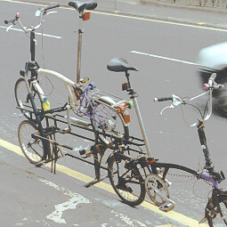
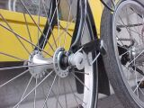

| Page last changed August 3, 2003 |

| 
| 
|
Taking a Brompton aboard motorised transport
Ensure your luggage is not considered a bicycle...
...because transporting a bicycle is usually more expensive
than an equal amount of anonymous luggage.
This is also usefull for bringing your folded bicycle into places
where bicycles are banned (When and how to leave your Brompton unattended - Forced separation - when folders not welcome) or for insurance matters (Taking a Brompton aboard motorised transport - Legal matter - is it still a bicycle?).
The advice is to hide the folded bicycle under its cover (Regional information concerning folder transport - Covers);
if an official gets suspicous, deny it is a bicycle.
- Carl Etnier, Oct 1999:
Good suggestion for most circumstances. It would not have fooled the
people at the security checkpoint (metal detector, X-ray machine)
last night, however.
- De Clarke, Oct 1999:
I found that the people with the x ray machines didn't
seem to care about the bicycle transit fees. Only the
people at the luggage weighing counter were obsessed
with charging more for bikes.
My brommie (encased) was x rayed at the ag inspection
station at Hilo and I thought "Oh no, they will tell
the cargo handlers that it's a bike!" But all they
wanted to know was whether there were any fruits and
vegetables in the case. They labelled it "no produce,"
waved me on, and the checked luggage desk remained
happily ignorant of the satanic velocipedal monster
lurking within :-)
- Mark Maier, Oct 1999:
Covering the bike and denying that it is a bicycle at all
helped once I had a confrontation with a German train
conductor, about 5 years ago. Note that this was a train
where bicycles were not allowed in the first place and if
they would have been allowed I should have payed for an
extra ticket. The principle used is that every object that
is recognizeable as a bicycle is a bicycle and has to be
treated as a bicycle.
My Brompton was sitting on the seat opposite of me, covered
with a large blue garbage bag (lacking the 'official'
Brompton cover) with only the saddle sticking out. The
conductor came to check the tickets and asked whose bicycle
this was and I said it's mine but it is not a bicycle. -
Yes, it is a bicycle! - How do you know, you can only see a
blue bag and a saddle? - This is a bicycle!! - It could be
a folded hometrainer, for example. - But I say it's a
bicycle!!! - [...]
He ended up getting very red in the face, not being able to
prove it is a bicycle and of course not being allowed to
open the package for proof. Eventually he left the
compartment without having me thrown off the train and
without having fined me for not having paid for the
'bicycle'...
I must admit it did hurt denying my Brompton was a bicycle,
as to me personally it is more than just a plain bicycle...
I'd assume with a better cover that does not leave the
saddle sticking out you should not have to go that far.
- DRMLyons, Oct 1999:
As has been mentioned before on this list -COVER IT UP - then if asked say it
is bicycle spares, an exercise machine, sewing machine, orthopaedic therapy
machine, sado-masochist pleasure unit..... or whatever. The stranger
explanation you give for it the less likely you will be questioned! As to
covering it up, the cheapest and smallest folding is a black plastic bin bag.
- Chris Newport, Oct 1999:
Maybe for long journeys where there's a risk of being challenged about
'being in possession of a bicycle' you could take the wheels off.
Then you're just transporting bicycle PARTS. Surely *that's* not
illegal anywhere?
Can we sit on a folded Brompton?
Andras Toth, Mar 1998:
I have read on several occasions in this mailing list that sitting on the
folded bicycle could modify the way the handlebar slips back to its place
to the point of not being able to fold the bicycle correctly.
What is the truth about this? Does it happen automatically, or is it
exceptional?
Sometimes the urge is just too great to sit down on it while waiting for
the train.
Also, I had to put a sign saying "DO NOT SIT ON IT" on the frame after
somebody used my folded bicycle as a seat in a crowded conference room.
- Andrew Mackay - The red flash round London's roundabouts, Mar 1998:
I've now sat on the cross bar of my folder Brompton for 4 and a half years!
I think that only people who are quite slim can do so.
Especially if you have a block mounted for the Brompton front pannier.
Sitting on the cross bar does not seen to stop folding or damage the bike
as far as I'm concerned.
Occasionally if I put my weight more on the top of the front wheel I have
later to bend down the metal hook on the front mud guard but this has been
fine and appears not yet to have fatigued.
It is rather like sitting on a moving garden gate in the train. There are
usually no proper seats available so I perch on the cross bar and smerk at
the standing comuters. My Brommie has made commuting quite enjoyable since
there are a regular group of cyclists exchanging route maps, tips and
sharing newspapers.
Brompton could not advertise the "sitting option" because it will not suit
all bottoms.
Once, when I did have a seat I also had to turf an erant bike-sitter off
my Brompton.
I saw a Brompton near Charing Cross station (London) with a very handsome
nautical rope bound all the way round the cross bar which might make
sitting more padded. =
- David Henshaw, Mar 98:
In my experience, it's perfectly safe (and quite comfortable) to sit on
the frame tube. Turn the saddle sideways and relock it to give yourself
more room. Then (very important this) make sure the saddle stem is right
down. If your weight goes down through the stem to the ground, the roller
wheels will not take any weight. If they do, they will almost certainly
break, unless you're quite light. I have never done the bike any harm
with the stem right down.
Brompton wisely don't make any comment about sitting on the folded bike,
but it's very useful on a crowded train, and it means you're effectively
giving a seat to someone else. (Why don't they provide seats for
everybody?)
If you DON'T sit on the bike, there's a chance that someone larger will,
which is even worse.
- Rob Cope, Aug 1998:
you can, so long as you let the seatpost right down so it, not the pulley
wheels take the weight. Otherwise, you'll bend/break the pulley wheel
axles (though these have been strengthened of late)
- Custfold@aol.com, Sep 1998:
I use the Brompton as a seat, but not in the folded state. On trains - if the
train is crowded, fold down the handlebars and rest the bike against the
partition - sit on the main tube and use seatpost as a backrest. My larger
bars will act as a stand with the front wheel turned, so I can sit down almost
anywhere. If you are small/feeling sociable you might even get 2 on the
crossbar, and since the bike carries you riding in this mode it should carry
the same load sitting down.
- S.P. Klein Bog, Sep 1998:
I found that when using the brompton as a seat the attachment points for
the little wheels around the luggage carrier will bend over time. On my
Brompton (1994 T5) one of these points finally cracked and would have
broken off eventually. The bike would not stand upright when folded
anymore. The entire rear frame was replaced at no cost by Fiets A Parts,
the Brompton importer for Holland three years after I bought the bike.
- Custfold, Sep 1998:
Watch the likes of Ryanair and cheapo airlines though - I was charged twice
for the B - once as a bike and then as excess baggage and the company then
said they only charged for one or the other but refused to refund either
charge - the UK air users council were a bit toothless in getting any result -
and I suspect the chummy first name terms with the airline person meant they
had regular exchanges.
A Brompton in a bus
Alasdair Baxter, Nov 1998:
The last time I took my Brompton by bus, I put it in the largeish
luggage/pushchair compartment at the front. However, when the bus driver
braked sharply, my bike had an undignified fall to its side. I could have
put it against the front wall of the compartment or facing the other way but
it would still have fallen on its side in a violent manoeuvre by the bus.
It occurred to me that, if I could get a strap fitted with Velcro and some
10 to 12 inches long, I could fix the bike to the horizontal tube forming a
wall of the luggage compartment and the bike would stay upright. What I
have in mind is something about the size of a small dog collar but with
Velcro instead of a buckle.
- Custfold, Nov 1998:
We can supply a shock cord elastic which can be fixed under the gear changer
on the 'bars. With the rear triangle strap, one hooks the end of the shock
cord onto the buckle of the strap and this holds the handlebars as an
insurance over the clip slipping off - it can also be stretched around a
stanchion. Alternatively T type owners can use one of the carrier elastics
- David Hansen, Nov 1998:
The best way to carry a Brompton on a bus is to put it in the
luggage rack sideways, ie facing across the bus, with the bike
resting against the bulkhead at the front of the rack.
With the bike like this it is pressed against the bulkhead when the
bus stops and doesn't go anywhere. Acceleration isn't as fierce so
it shouldn't fall over. When the bus corners the bike is pressed
against the bus side or the guard rail of the luggage rack. The
better buses have deep luggage racks with higher guard rails than
the older ones, where luggage carrying was not considered so
well. The only sort of new bus with poor luggage carrying facilities
are the low floor ones strangely.
A Brompton in front of a bus

Custfold, Jun 1999:
I work with Sportworks on bringing their [bike carrying] racks into Europe, and have had the
Brompton on racks regularly - the Moulton may fall foul if it has front rack
fitted. 16" wheels do fit but MUST be put in such a position as to ensure
maximum pull on spring in retaining arm - one way is to hook over the luggage
block - but usually its as easy to fold the bike!
The Sportworks rack is fitted to around 20% of US urban bus fleet at last
count and carries over 250,000 bikes/month on recent estimates from user
feedback.
A Brompton in the trunk of a car
- Ruud H.G. van Tol, Apr 1998:
Some remarks about Dimensions:
I use my Brompton mainly to go to Hertz to pick up a car.
A nice ride from my house through the Vondelpark, about 5 minutes.
The only cars so far that the Brompton doesn't fit in nicely:
- Bob Gelman, Oct 1998:
Neither [Brompton nor Birdy] fits easily in the truck (boot)
(a/k/a "rear glove compartment") of my Miata.
- David Edge, Oct 1998:
A 'Miata' is some kind of motor car, I imagine. The nearest word in my
dictionary is 'miasma': an infectious or noxious vapour, from Greek miaino
'pollute'.
Legal matter - is it still a bicycle?
- Bob Gelman, Feb 2000:
Many auto insurance policies here in the US have an exclusion for
stolen bicycles; e.g., when you have theft coverage you are insured for
the loss of your car and/or its contents, but bicycles are excluded
(sometimes you can get them covered for additional money, in a "rider"
to the original policy). Since folded bikes may be put "out of sight"
and stored in a locked trunk (boot), I wonder if one could successfully
argue (personally, I'm doubtful about this) that the bicycle insurance
exclusion doesn't apply to a folder hidden away in a locked trunk. The
hidden folder would seem to present no more risk to the insurance
company than any other item (unlike bikes attached to various OUTSIDE
parts of the car). Indeed, the folder would be LESS of a risk than any
item casually left on the seat of a vehicle (these ARE insured) and in
full view of the world thru the windows of the car.
Don't lose your bits
The problem
- Custfold, Sep 1998:
It can happen in air travel mostly - the clamp plate bolt can be extended
just enough to fit a thin nyloc nut and still have enough travel - we sell
kits of a longer bolt and a thin nut - Alternatively just tighten the clamp
up across the clamping face when travelling.
- Phil Gough, Oct 1998:
[...] the clamps vibrate out easily
when carried in a motor vehicle. I nearly lost one in the boot of a taxi.
- David Cox, Oct 1998:
I've had one clamp loosen itself and come off while left side down in the
boot of a car. I usually tighten them now just in case.
- David Dodson, Oct 1998:
I lost a clamp whilst hitch-hiking with my Brompton
lying on its side in a car boot. A replacement costs
± £5. I'll adopt the 90° idea to reduce screwing/unscrewing.
- Mr Bob Imrie, Oct 1998:
I used to think the clamps wouldn't come out, (even though we once lost one
on a Cresswell folding trike) but got my trusty T5 out of the car yesterday
and one of the clamps was lying on the boot floor. So I'm sure you should
check occasionally to make sure you don't unscrew the clamps further than
the absolute minimum to release the hinge. I'm sure they would be a
relatively expensive spare part to buy!
- Peter Amey, Oct 1998:
I only do this when the bike is laid down on its side; it is not
necessary when it is upright.
The cure
- Custfold, Oct 1997:
Brompton Tips as in A2B p.23 issue 2
There is a simpler solution to the tip for retaining clamp plate bolts (not
technically a pinch bolt as it doesn't pull two faces directly together) -
don't know why I didn't think of it earlier, although in 8 years I've never
lost one.
The solution is to buy a longer M8 bolt, and fit a THIN M8 locknut
(the bolt will tap out of the moulded wing (c.f nut) plate).
[...]
Do however occasionally check the
clamp plate ends, and internal corners for cracking, and the 'fit' of the
clamp to ensure that there is a small gap always between the frame
and inside face (with the hole in it).
Replace clamp if cracked (I usually have some).
- Custfold, Nov 1997:
Well I've made some up - should really charge around £2, but if I buy
sensible quantities it can work at £1.80 + £0.70 p&p or stout envelope with
stamps for 70gm.
The plate just clears the clamp lugs, and the whole seats down with the nut
on the bolt - a special length for the purpose.
- Custfold, Oct 1998:
The OEM bolt is just long enough to allow the clamp plate to clear the
seatings, I have made bolts 5mm longer (not in standard R series size
progression) and fit ''thin" Nyloc (tm) nuts which just fit without fouling
anything details Box 15174 Glasgow G4 9LW
- David Low, Sep 2002:
I'll do that I thought. I bought two longer bolts and some lock nuts.
First problem was that the unthreaded portion of the bolt prevented the clamp being tightened.
Had I had a die I could have cut the thread down a bit, but did not have a die.
I then bought two screws to replace the bolts (screws being threaded all the way up to the head).
I cut down the locknuts to make thinner nuts and fitted the clamps. All seemed fine.
It wasn't fine. First trip out was only to the post box.
I got there but when setting off again the clamp on the handlebar assembly came lose,
the bars went forward and I was tipped onto the road. Aarrgg.
(I'm not sure about the spelling of that word but I knew how to say it at the time.)
After recovering I examined the clamp and discovered my mistake.
I had not realised that the end of the longer screw was pressing hard against
the back of the hinge casting and preventing the clamp from closing correctly.
It looked closed but it was still loose enough to be pushed off the shoulders
of the hinge plates when pressure was applied. Aarrgg.
I shortened the screw and it is now fine.
If you make this modification make sure you don't make the same mistake.
Another bit not to loose

The Brompton comes with a platic cap over the left front wheel nut, protecting
the frame (when folded) from the sharp edges of the front wheel nut.
To prevent you from loosing it, attach it to the frame with a zip tie as
demonstrated on this bike from Velodroom (who always do this).
If you have lost it or you want a second one to protect the world from the
other wheel nut, try...
R.Hainsworth, Aug 2002:
[...] the plastic screw top from one of those 1 liter tetrapack
cartons which are used for orange juice and similar. The carton is
the one with a "gabled" top, ie. /\ with a screw cap one of the "roof
pitches" and the screw cap fits the B wheel nuts perfectly when
properly trimmed.
A further advantage is that the top comes in a different colour
according to cartons contents so an approximate match or psychadelica
can be achieved for the discerning B owner.
Bromptons on commercial air flights
Testimonials
RL Bob Morgan, Oct 1997:
I'd be interested to hear from folks who travel with their Bromptons on
regular old commercial air flights (we all know that it's the official
bike of private pilots ...). I think Channell told me once that he has
taken his as carry-on and put it into the overhead bin. This seems
attractive, but I can imagine the airlines taking a dim view and grabbing
it from me as I try to board the plane, throwing it into the luggage
compartment and smashing it to bits. Do people really do this regularly,
or do they shell out for $150 hard cases? Does the story vary by airline?
Does it help if you disguise it?
In the cargo, do I need to let some of the air out of my tyres to prevent them from bursting?
- M. J. Zimmers, Mar 1999:
Cargo holds are pressurized and temperature controlled on Douglas & Boeing
jets and presumably on most others, although I have no firsthand experience
with the others, tire pressure should not generally be a problem. However
do be aware that "pressurized" does not mean that sea level pressure is
maintained, more likely is a cabin altitude of about 6000' - 8000', this
figure varying somewhat for each type of aircraft.
- Valerie Zuver, Mar 1999:
I recently flew a recumbent bike on Delta airlines in the U.S. [...]
They specifically address bicycles in their luggage FAQ, but do not
mention anything about letting air out of tires.
- Channell Wasson, Mar 1999:
Don't worry about about the tire pressure if you are using 75 psi
- Custfold, Mar 1999:
A cylinder is strongest means of making a pressurised container - short -for
the purists - of using a perfect sphere (as demonstrated daily by raindrops &
bubbles)
Thus aircraft are flying tubes, but with the caveat that a sudden drop in
pressure - which is why you have those masks - could cause a shock reaction in
your tyres <pop>. Other things going into the hold are equivalent to tyres,
but I cannot think of any just now.
Packaging a Brompton - coping with evil baggage handlers
- David Cox, Oct 1998:
If you put the Brompton in the soft bag and protect it a bit with
polystryene pipe insulator (otherwise sharp bits wear through the bag).
It seems to travel OK although you might invoke extra charges.
- David Edge, Nov 1998:
This is what we did with reasonable success. The padding was our clothes
for the holiday in carrier bags and the soft bags were actually the bags we
also use to disguise cumbersomes.
- Len Rubin, Nov 1998:
My companion and I have traveled with two Bromptons in their slip covers as
well as two custom extra large front carrier bags and two rear
quick-release-seatpost-racks w/rack trunks, all transported through the
airports and rail stations on two ultralight, instantly collapsible
ClickCarts (folds and expands like a folding umbrella, and sold through the
Sharper Image catalogue.) We put all of it in the overhead bins with no
trouble, other than removing the saddle and pedal prior to boarding, so as
to gracefully fit them in the bins without struggle.
This was on transAtlantic flights (United, I believe). I have not tried this
domestically, as I usually take budget flights with smaller carriers, and
they are much tougher with the size restrictions (the bikes would clearly
fit the overhead bins, but they won't get past aggressive airline personnel
and those infernal go/no-go fixtures!)
- David Edge, Nov 1998:
The last time I was on an aeroplane (Brussel-East Midlands), they were
taking attache cases and big coats from the passengers to put in the hold
as they climbed aboard. The compartments would have taken a large woolen
scarf or a small handbag.
An HS-146 I seem to recall.
- Doug Faunt N6TQS +1-510-655-8604, May 1999:
What I did was get a cardboard box that the bike is
originally shipped in, boxed it up in that, and flattened it at the
other end. I was able to leave it at the hotel in London where I
normally stay, since I started and ended my trip there, but if you
have a rental car, it'd fit in that reasonably.
- David Cox, May 1999:
I have taken the Brompton to USA, Canada, Cyprus, Rhodes, Italy, Germany on
a variety of airlines charter and scheduled. I put it in its soft bag with
some pipe insulator taped to protruding bits (mainly to protect bag) and a
luggage strap to keep it together and provide something to tie lable to.
There is no way that European carriers will welcome a Brompton as carry on
luggage - they dont even like trolley bags or 11 lbs of designer carry on
bag. It has been in the hold with no problems each time. Some airlines just
take it eg. Lufthansa scheduled, others ask what it is and sometimes ask
me to take it to the fragile luggage bay, one US carrier wanted me to sign
something to say they could damage it at will (but they didnt!) one
probably Airtours said it was "out of guage luggage" and charged an extra
£20, another charged as for a bike, skis, surf board but as we were well
over our luggage allowance this was cheaper than paying by extra weight
anyway. I used to warn airlines in advance but now just turn up. The
Brompton thus packed seems to go through the conveyor belt systems without
difficulty.
- Stein Somers, April 2002:
A close affiliate of the Brompton company, Simon Koorn, advises
not to cover a Brompton on flights with the standard cover.
Tie it together to prevent it from falling open,
or put it in a hard case.
- Ian Charles, Sep 2002:
[Andrew Ritchie and Ian at Cycleshow 2002 in London] briefly
discussed transport of Bromptons by air.
Ritchie told me he always puts his bike upside down in the standard bag
so that it is very clearly exposed as a bicycle and trusts that
the handlers will take care of it.
He has only once incurred any damage carrying it that way.
- If you have a folding pedal, be aware of Spotlight on pedals - The Brompton folding pedal folding too far.
- Investements: Taking a Brompton aboard motorised transport - Suitcases to serve and protect a Brompton, Taking a Brompton aboard motorised transport - Inflatable Cases?, Taking a Brompton aboard motorised transport - Floating cases
Suitcases to serve and protect a Brompton
- Channell Wasson:
The Samsonite case used for the Brompton is known as the Large Pig.
It is the largest piggy-bag that Samsonite offers I am told.
It measures 22 5/8"x11.5"x24".
We sell it presently for $189.
- Channell Wasson:
The new Samsonite Epsilon suitcase for the Brompton arrived today.
It is not as "hard-backed" as the Samsonite Piggy Back,
but it provides good protection.
It is somewhat larger than the Piggy Back so there is a bit more
room inside for other items you might travel with. The new case has four
wheels and allows two ways for pulling or rolling it around. A very
convcenient arrangement!
It is quite attractive and modern Itallian looking.
The price for now is $131 versus $189 for the Samsonite Piggy Back.
- Channell Wasson, Jul 1998:
Both L & T models will fit into our Samsonite Epsilon case. L's and T's
will also fit into the Samsonite "Large Pig" case, but it's a very tight
fit. We prefer the Epsilon--a bit larger and cheaper and modern looking
($156).Both cases have wheels and pull-along handles. Unfortunately
Samsonite has discontinued the favored Eplsilon. Some are still around
in stores, but we have an ample supply.
- Steven M. Scharf, Mar 1998:
There are several hard side suitcases that will
fit a folded Brompton.
For instance see the Samsonite Epsilon series at:
http://www.tagintl.com/samepsilon.html
The model 488111060 is perfect with enough width
to add some foam padding and enough extra space
for accessories. Model 488111071 would also be
fine with a bit less space left over, but that
type does roll a bit easier.
Their more expensive Silhouette line also
has some cases that would be fine, see:
http://www.tagintl.com/samsiloette.html
A folded 3 speed with a folding pedal is
about 22.2" x 21.5" 10.6"
The problem you always have is what do you do with
the case when you arrive at the airport and want to
ride the bike away. The bike friday lets their case
convert to a trailer which is one solution.
Storing a suitcase at the airport at the baggage check
gets expensive; on a two week trip to the U.S. it would
often be cheaper to throw the case away and buy a new
one when you leave unless you have someone to keep it for
you!
Worse is when you don't want to leave from the same
place you arrive. Often the best solution is a soft
carry bag that you roll up and carry with you for when
you want to carry the bike on a train or bus, and when
you're ready to leave go to a box store and buy a very
strong cardboard box and pad the inside with newspaper,
clothes, etc. A high strength box (such as a Tharco TW339
30x24x12) doublewall costs about $US 7 retail from the
manufacturer, and box stores probably mark it up about
100% to $14.
I checked my Brompton in its original box as luggage
from Taiwan, heavily padded with newspaper, clothing,
etc. No worse for wear. The hardside suitcase plastic
sides are flexible as well so you need to pad it well even
in the hardside cases.
- Channell Wasson, Mar 1998:
We have a kit made by BicycleRevolution that converts the hard case to a
trailer.
- Doug Faunt, Jul 1998:
My T model fits in the Samsonite case I got from Channell.
It's tight, but it goes. I do have the extended seat post, which
makes it more convenient, but not by much.
- Richard Pearson, Oct 1998:
There is an equivalent Samsomnite Epsilon (PiggyBack) to the one Channel
stocks available in the UK but I haven't checked it to seeiff the bike
fits. There is also a Carlton Semi Hard Case which should fit, but you need
to work out what to do we the suitcase when you get there. I got a
Navigator Soft Sided (Hard Framed) 26 inch Case from Makro (only GBP 25)
with the idea of packing my clothes around the bikr but I still haven't
quitee sorted the practicalities yet. An acquantance of mine built a
dismantleable bike which he does this with ( in a standard large suitcase.
- David Cox, Oct 1998:
Bike Friday travel case is really a standard case with some fitments. It is
too small for a Brompton. There is a Samsonite case that takes the Brompton
Channell Wasson stocks it in California - I've not seen anything suitable in
downtown Birmingham luggage shops
- O'Flynn, David D, Oct 1998:
Cases of several makes and models were considered, but only one case
available (in stock or from catalogue dimensions)
fitted the bike fully :
Samsonite Epsilon 450 Series Oyster 2 , Model 45A-079 (Express 79) (the
Epsilon Oyster 79cm for short)
Outer extreme Dims 79 x 62 x 30 cm
2 wheels (unidirectional, of course)
Retail price @ 10/98 = GBP109.00
Weight empty : 5.8kg
Comments : This polypropelene case is large & expensive, but gives a strong
and flexible shell for the bike, without any bike dismantling required to
fit inside. Additionally, there is interior space available for bike
accessories or other items (anyone for clothes?). The downside is that it
only has the 2 wheels, requiring the case front-end to be lifted slightly to
move the case.
I hate carrying/lifting loads when I can avoid it, so I asked the shop guy
if they had any spare wheels of a sort that could be fixed onto the
front-end of the case. Its turns out that one of the 360degree-swivelling
wheels which Samsonite use in their 500 series cases can be screwed onto the
front a little off-centre (hinge bulge prevents centering). There is not
enough space to fit 2 of these wheels, but a pair of smaller wheels should
be available elsewhere ... The single wheel was trialled with doublesided
tape - it worked very well, except for sharp, fast right turns, where the
case lost balance and tipped slightly, but did not fall beyond the front
lower right corner touching ground.
So, this is an effective modification, which cost me nothing extra, other
that the time to secure the 3rd wheel to the case. My black pearl fittingly
has its oyster!
As all these types of cases have rounded corners, the outer extreme sizes
above are deceptive, applying to the centre of the case dimensions only. The
corners are therefore somewhat smaller. However, the flexibility of the
casing means that the material can deform slightly easily, enabling the L3
and L5 to fit. (The T models, with rear carrier rack, may not fit. Not
having one or its exact dims, I can not be sure.)
- Tom Bennett, Aug 1999:
I bought one hard suitcase, but when it arrived, I realized that the damn
thing weighs almost as much as the bike. What a monstrosity! I kept it, but
decided to try another method with my wife's bike. With that one, I bought a
large canvas suitcase, totally collapsable. I put the Brompton in the middle
of it, with a pad around it and surrounded by clothes --(this was my one
use for a Brompton cover), and sent it with regular airline luggage. Both
bikes arrived in Paris in fine shape. The canvas suitcase was stored inside
the Samsonite. For the Samsonite, I rented a small warehouse to store it.
(Well, perhaps I exaggerate, but I'm glad I was staying in one place, cause
that monster wouldn't fit into any Euro car rental I can afford.) Next year,
I'll buy another collapsable suitcase
- De Clarke, Aug 1999:
I improvised: made a large sack out
of tough cloth, and an inner sack made of 1/4in neoprene.
The resulting bundle (once the bike was inside) was ugly as
sin, tough to carry, but quite sturdy. The real fun
began at baggage check.
The bundle was irregular enough that I went to the odd-size
counter. Ahead of me in line were two bike racers with
high-tech performance machines in cardboard bike boxes.
One of them looked at my weird bundle curiously and when
I revealed that it was a bike, he kindly handed me
a chit from United Airlines for free bike carriage.
"If they find out it's a bike," he said, "they'll
charge you $50. Our club gets these slips from the
airlines so we don't have to pay it." I thanked
him dutifully, but felt that I surely wouldn't need
the slip since the brommie package was clearly not
bike-sized or bike-shaped.
So, after patiently waiting amid the bedlam, I arrive
at the counter. "What is *that*"?" says the weary
representative of United, who has had a rough day already
even though it is 8am. "Well," I say, "Umm, well it's
a sort of bicycle." "No!" she says and I unwrap it
enough to show.
After getting over her surprise, she frowns. "All bikes
have to go in a bike box," she says. And she proceeds to
haul out one of those huge flat boxes. "But it's folded
up," I say, "and if it were unfolded it wouldn't fit in
your bike box. And it's much smaller and actually
safer in its folded state." "Well," she says, "if you
won't put it in a bike box then we won't be liable for
anything that happens to it."
"It's in a quarter-inch of neoprene," I say, "and if
you will be nice and plastic-baggy it and put Fragile
tags on it, I think it will be just fine." So, to
her credit, she double-bags the ugly bundle in plastic,
tapes it up with official UA tape, and puts Fragile
stickers all over the increasingly disreputable package --
ignoring her co-worker at the next counter, who keeps
asking "What is *that*?" as she passes to and from
the conveyor belt.
Returning to the counter, she tells me firmly, "I'm sorry,
but now that I know it's a bicycle I have to charge you
$50, that's the rule for bicycles." My disbelieving and
wounded expression doesn't work a bit, so with belated
gratitude I present the slip my recent acquaintance had
handed me, and this gets my brommie aboard the aircraft
without the extra $50 fee.
Needless to say, as soon as I get a chance I call CM
Wasson and wail that I really need a luggage-looking
case so as to escape this persecution on the way home!
And we make arrangements; he ships me a case Fed
Ex (to Hawaii, ouch, but it will save me $50).
I will check the case at the normal luggage counter,
not breathe a word to ANYONE about what is inside it,
and hope that whoever runs the x-ray machine doesn't
snitch to the baggage clerk that it looks like some
kind of bike. Sheesh.
- Jerry Kaidor, Aug 1999:
[...] the original packing box [...] is just
a sturdy cardboard box that Brompton ships them in. It looks like - a box.
I seem to remember it being 25" by 25" by 12"- something like that.
I bought two Bromptons in England. The bike dealer was kind enough
to give me a roll of that super-strong plastic packing tape. I taped the
boxes together to form one large box. Went through the system, no trouble
at all. Until we got to U.S. Customs, where they jumped at me aggressively
"What's THAT?!?" I explained, showed the agent the customs form ( with
two declared bicycles ). Moved on in the Customs line. Then, when we got
to the head of the line, a second customs agent jumped at me: What's THAT?!?
I was glad to know that the flow of illicit Bromptons onto our sacred soil
was being properly regulated. :-)
- De Clarke, Aug 1999:
I do have that box, but it was even harder to carry than the
ugly sack -- what I don't have is those handy straps+molded-handle
that can be used to turn any cardboard box into something you
can carry.
- Steven M. Scharf, Aug 1999:
What I was thinking of is something like the Brompton
zippered carrying bag (comes with the Taiwan Brompton)
but two inches bigger in each dimension with pockets
on all six sides that you insert inflatable bags
from Sealed Air corporation.
You need the pockets so the sharp edges of the bike don't puncture the bags.
- Jim McLaughlin, Aug 1999:
Though I usually use Channell's Samsonite case on the airlines, I have checked it
at the regular baggae counter in nothing but the standard fabric cover that the
T5 comes with. Nobody seemed to care what it was there. Maybe going over the
water makes them fussy?
- Ian Charles, Sep 2002:
On the Airnimal web site
they have a photo of a Brompton
folded in the case. It's a very snug fit which would allow only a
small amount of space for anything else (but on the other hand a tight
fit is good from the point of view of stopping the bike rolling around
inside). The only component which needs to be removed is the saddle, and
to make that a quicker and simpler operation I fitted the saddle adapter
pin which enables the fitting of a q/r clamp. One of the Airnimal
designers, who knows the B well, says he thinks the bike can just be
squeezed in without doing this, but I can't manage it. I bought the case
because it was exactly half the price of the German one which doesn't
require the saddle to be removed.
So far, I've found the case to be better suited to the B than to the
Airnimal itself - to get it into the case involves removal of both
wheels, handlebar, at least one pedal etc - fine for a trip where the
bike is going to be assembled and used for an extended period at the
other end but not the most convenient if it was having to be frequently
packed and unpacked.
See also Carrying or rolling issues - Bags to carry a Brompton
Suitcases that turn into trailers
- Lucas Fletcher, Feb 1999:
[Channell Wasson's trailerized suit case] is something new:
a Bike Friday type of arrangement. I tried
something similar several years ago, using a freebie USAF container that
was really too big, on parts (wheels, axles, towbar and hitch) purchased
from BicycleR Evolution (Ian Scholz). I got as far as a friend's near
London, then parked it in his stable, relying on the Brompton-supplied soft
cover the rest of the way, including overnight bus to Paris. It might have
been easier with a smaller container. This one was 24x24x20 and I guess
the ideal size would be 24x24x12. A trailer is quite a lot to haul around.
For luggage I ended up using a stiff-bottomed duffel cross-ways on the
rack of my T5 -- back far enough to avoid my heels. For the plane ride, I
never did find an overhead that would take the bike, even with saddle
removed. I managed with checking in the bike, in its soft cover, and the
airline people put it in a huge plastic bag plastered with Fragile
stickers, and babied it for no extra charge. I could have used the
backpack, perhaps, because the T5 is a lot to carry in and out of subways.
- Channell Wasson, Apr 1999:
Last week I flew to Baja, Mexico. I took my Brompton in the Samsonite
Epsilon suitcase. The hard case was equiped with our prototype pending
trailer conversion mechanism which we will soon offer for sale. NOTE: This
is not a Brompton product and will be sold only to buyers who agree to take
it on at their own risk. i.e. Caveat Emptor. The main truck for the trailer
is permanently bolted to the outside of the case, but it is fairly
inconspicuous. The wheels and other trailer fittings go inside the case with
the bike. The 12" wheels with neumatic tires must be deflated to fit into
the case. They are reflated quickly with the Brompton pump when needed.
The suitcase has smaller wheels for floor transport and a retracting handle
which allows easy transport through an airport to the check-in counter. The
standard looking suitcase was checked as luggage with no questions or even
curiosity from the airline counter personel.
On arrival at San Jose del Cabo in Mexico my luggage was retrieved and
wheeled to the front of the airline terminal where the trailer was easily
assembled and the bike unfolded with much supervision by a happy interested
crowd that gathered around. Finally I put my other luggage in the
trailer/suitcase and rode off to the cheers of the many people standing
nearby as they waited for tour buses. It was a beautiful sunny warm day and
my 20 mile ride through the beautiful, quiet but very hilly Mexican country
was an inspiring bit of fun. Eventually darkness convinced me to pack up the
Brompton and finish my journey by hitchhiking. The suitcase looked small and
lonely on the roadside, but what an interesting load it holds! Two good
rides with locals took me the rest of the way home.
There were some long hills on the ride-- and several good pumps to get up
them, but the 25 mph down hill coasts were great! I was very pleased with
our trailer design and its performance. It pulled easily and tracked well
and on line with the Brompton. The flexible hitch to the bike worked
especially well. This was the first time out with the trailer set up. Now
I'm looking forward to another longer trip, but maybe not so many hills!!!
- Stuart Quick, May 2000:
I've just made some fairly heavy runs with Channell's trailer so
its probably a good time to describe it. For those that haven't
seen it, it consists of the samsonite suitcase and a frame made
out of square tube. All the metal is stainless steel except the
small clamp onto the seat post, which is galvanized steel. The
suitcase has an extendable handle and strap that allows you to
hang other luggage on it whilst walking it along with one hand.
There are two stub axles with wheels, and 3 pieces of tubing
which snap together fairly quickly. For collapsibility you
can remove the wheels from the stub axles by some heavy duty
sprung pins. As a general point, the whole frame is quite heavy
duty. I have moved some heavy loads with it in the last couple
of days without any problems at all.
The frame components use expanding 'bullet' joints on each single
end of a tube which align and snap in to holes on the other end. The
joints are very solid, and can be disconnected fairly easily, though
the springs are quite strong. It takes about two minutes (at the most)
to pull the whole frame apart. From a packed state, it takes about
15 minutes to unpack everything and cycle away. Its much less if you
don't have many accessories strapped to the bike (handlebar ends,
U lock, saddle (telescopic seatpost), mirrors, saddle bag, tools,
lights, computer, bottle, sony walkman!...). With all these extras I
cannot fit the trailer wheels in the case with the bike, so I put them
in the front pannier and tie this to the suitcase using the strap. In
any case it saves deflating them...
The trailer attaches to the bike via a tow hitch/clamp (+pin) around the
seat post. If you leave this attachment on when you are not using the
trailer, you can use its quick release clamp to slide it up the seat
post when folding.
The ride is great. As I said, I have to keep reminding myself that its
there. I wouldn't recommend anyone towing loads without the front brakes
being updated though :-) With loads, its probably a bit hairy
otherwise...
The traveller's dilemma
Richard Lighton, Oct 1998:
I had vaguely hoped that the hard-sided travel case that Channell Wasson
sells came with a trailer conversion kit so that I could tow it if
necessary, in the manner of the neat thing that Bike Friday sell.
Sadly this is not so.
So the problem is: I somehow pack my Brompton and arrive at an airport
and am delivered thousands of miles away with said Brompton and
luggage. Sooner or later I will want to fly back. Meanwhile, how do
I move the luggage and whatever carrying case I used if my means of
leaving the airport is Brompton? You may assume I travel light, and
that anything I'm carrying will fit into the Brompton case (once the
Brompton is removed). You may also assume I have ten miles (16km) to go
before I can leave the case somewhere.
Possible solutions I see are:
- Bike Friday travel case (I don't think the Brompton fits)
- Bykaboose trailer (How small does it fold? How do I transport that?)
- Cardboard disposable packing case. (One came wrapped round my bike
when it was delivered, but what do I do on the way back?. Do airlines
provide on-the spot packing? Are these really robust enough to stand
up to passenger airline baggage handling with a very high probability
of the bike being instantly rideable on arrival?)
- Some way of attaching a (now loaded with other stuff) case that
held the Brompton to the Brompton.
If solution 3 is the way to go, how much time do I have to allow to
sort out the hassle of getting the case, packing the bike, etc? I can
reasonably assume I can pack everything else in a way that I can carry
on the bike.
(Getting the bike to the departure airport is assumed not to be a
problem)
- Stephen W. Butler, Oct 1998:
My answer is the Bykaboose trailer. On the airplane Eeyore (bike) is in
the Brompton hard suitcase along with front carry bag, tools, soft cover,
spare parts and etc. My clothes, toiletries and folded Bykaboose are in
a large soft suitcase. At destination airport; Eeyore and Bykaboose are
assembled, personal items and folded soft suitcase are put inside the
hard suitcase and the hard suitcase fits inside the trailer. Soooo clever.
As I peddle away from the airport I feel compelled to let out a
resounding Tarzan yell.
- Carl J. Grillmair, Oct 1998:
I just got myself a Bike Friday and the trailer attachment (extremely
minimal compared to bykaboose or any other trailer - just 3 cro-mo
bars and two wheels). It works by having 3 predrilled holes in the
Samsonite suitcase into which the trailer bars are bolted. I don't see
any reason why you couldn't do this with the Brompton suitcase. If
memory serves, the trailer kit is $169US, though you could check the
web page above. Note, however, that the bike-side trailer hitch screws
into a special fitting brazed onto the BF's right-hand-side
chainstay. You'd presumably have to come up with some other way of
mounting the trailer hitch, using c-clamps or something...
- Bob Gelman, Oct 1998:
Could one simply check the hard case in to be stored at the airport for
use on returning to the airport for departure? Or, perhaps more risky,
could one remove the bike from the hard case, close the empty hard case,
and leave the case "unclaimed" at baggage arrival. The airline would
then, hopefully, store the hard case as "unclaimed baggage" (hopefully
leaving it at the airport rather than some "long term off airport
premises storage place") allowing you to reclaim it and use it for your
return flight when you come back to the airport.
Things were so much more simple back in the 60s. You could just ride
your bike from the terminal out to the plane and hand it up (unboxed !)
to a guy in the baggage hold of the plane. They even managed to not
damage the bike in transit in this "unguarded" condition!
- Steven M. Scharf, Oct 1998:
Leaving the suitcase at the baggage check would be uneconomical. It
would be cheaper to throw the suitcase away and buy a new one if the
trip was longer than ten days or so (depending on how much you
pay for the suitcase and how much the daily cost for baggage is).
It might work to leave it as unclaimed baggage. I remember forgetting
a stroller at SFO and going back two days later and it was still out
in the baggage claim area for anyone to take. The airline doesn't
necessarily take unclaimed baggage into their little office there.
- Bas Klein Bog, Oct 1998:
After landing, unpack, and send the hard case poste restante to the nearest
postoffice. They will keep it for you indefinitely.
Another benefit of this way of storing your hard case; you can send the case to any
airport, poste restante, within cyclable distance. You don't have to come back to
the same airport again.
As for costs, that is entirely another problem.
- See also Trailers - Trailer reviews
Inflatable Cases?
David Dodson, Apr 1998:
How about someone making inflatable cases?
To a first approximation this would be like
wrapping the folded bike in an air matress.
On leaving airport: let air out, roll up;
At last garage before arriving at airport (or
by hand pump in emergency): unroll, inflate.
Careful design could allow a neat hinged box
shape with ample pneumatic padding all round.
Important: several separate air compartments
are needed to allow effective padding to be
maintained in spite of some puncture(s). Use
same puncture repair kit as for inner tubes?
A challenge for all kit makers! If you read it
here first, make a Brompton pneucase first...
- Steven M. Scharf, Apr 1998:
I recently received computer equipment shipped with
inflatable pouches by Sealed Air Corporation for
padding. The pouches are re-usable and are inflatable
with a soda straw.
Combining these pouches with a soft bag would be
sufficient padding. Compartments sewn into the
inside of the bag could hold these air pouches.
The bag would have to have dimensions a bit
greater on each side to accomodate these.
- Bob Gelman, May 1999:
The thought occurred to me the other day that something might be made
from the inflatable "lounge floaters" that one uses in swimming pools.
These are rectangular approximately shoulder width and body length.
They are made of vinyl, cheap, and light. The idea would be to fold it
(lengthwise) in half, with the folded bike inside. If one of these were
enclosed in a protective nylon sheath (to prevent puncture of the
inflated floater), it could be wrapped around a bike and secured with
straps, perhaps providing full protection. It could be deflated and
easily packed. Another piece of "pool equipment" that might be used, if
required, around the circumference of the folded floater (on the 3
"open" sides besides the side of the fold) would be a foam jousting
stick (perhaps 5-6 ft long, 4-5 inches in diameter) that is sold for
kids to bat each other with in the pool.
Floating cases
JP Desbruèhres, Oct 1998:
Flying is interesting but you are making no serious effort on your
private folding plane containing your fodable bike the trailer of which
can easily carry your toothbrush and the folded plane.
I am working very seriously on the foldable boat containing the folded
Brompton and vice versa. The reason which started the whole process was
a metaphysical question I could not answer:
"Why cross the river on the bridge ?"
If anyone has a better answer I would like to know.
If not visit the Nautiraid Website:
http://www.nautiraid.com
E.mail:
phguyot@nautiraid.com
- Custfold, Oct 1998:
The York 80 will fit the Brompton frame, and the front panel removes to allow
loading - it is bright yellow, watertight (the 80 refers to the 80 lb which
it has in bouyancy when dumped into water).
The handles moulded onto the unit will aid handling - it fits (sans frame)
into the maximum carry-on box (just) and can be supplied with rucksack straps
to carry it when off the bike - the width/length is just right to take 2
stacks of A4 sheets which will take the load to maximum capacity.
I'd import these but for small quantity penalties, and high volume for low
weight which would whack the freight costs up.